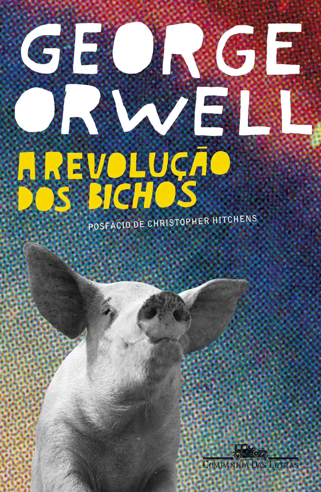

Novidades
Aqui você encontrará as últimas notícias sobre a minha vida.
Recomendações de Livros
1984 - George Orwell

Uma distopia clássica que narra um futuro totalitário onde o governo controla todas as ações dos cidadãos, inclusive seus pensamentos. A obra explora temas como vigilância, repressão e manipulação da verdade, tornando-se uma leitura essencial para compreender os perigos do autoritarismo.
A Revolução dos Bichos - George Orwell

Uma fábula política que satiriza regimes totalitários ao contar a história de uma fazenda onde os animais se revoltam contra os humanos para criar uma sociedade igualitária. No entanto, com o tempo, a liderança se torna corrupta, refletindo as falhas do poder absoluto.
Outros
Grupo de Basquete
Participo de um grupo de basquete onde jogamos semanalmente. É uma ótima forma de manter a saúde, melhorar a coordenação e fortalecer amizades. Se você também gosta de basquete e quiser jogar com a gente, entre em contato!